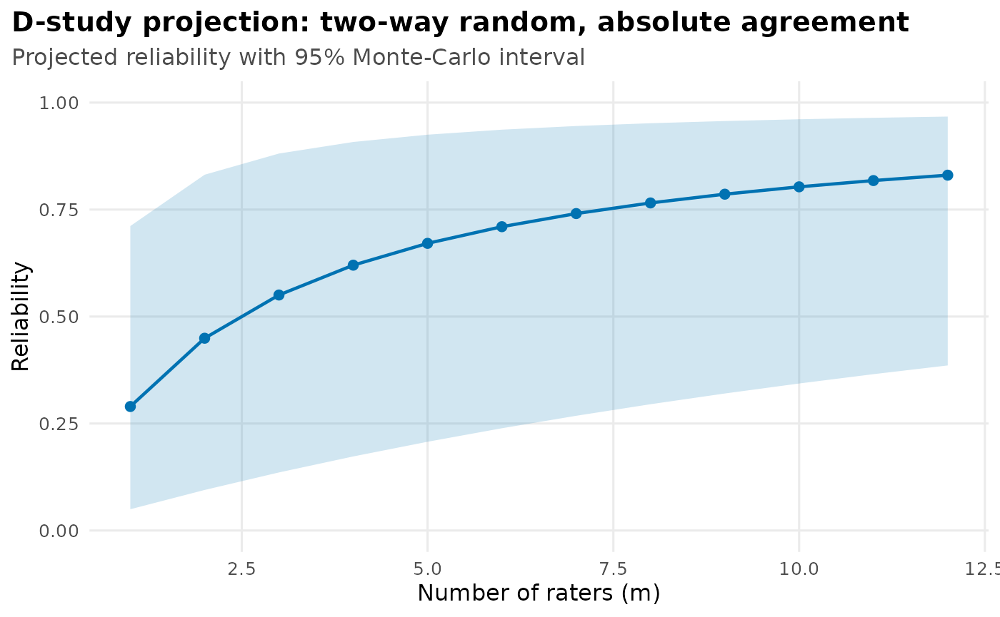
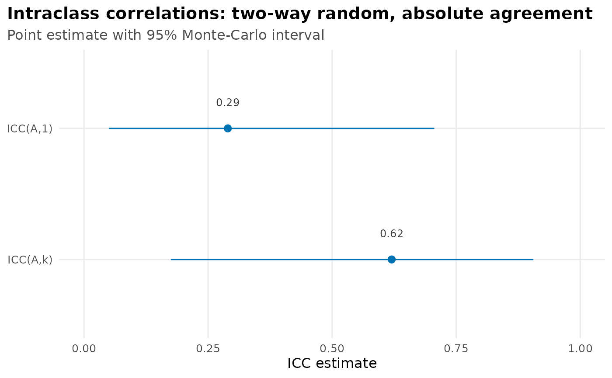
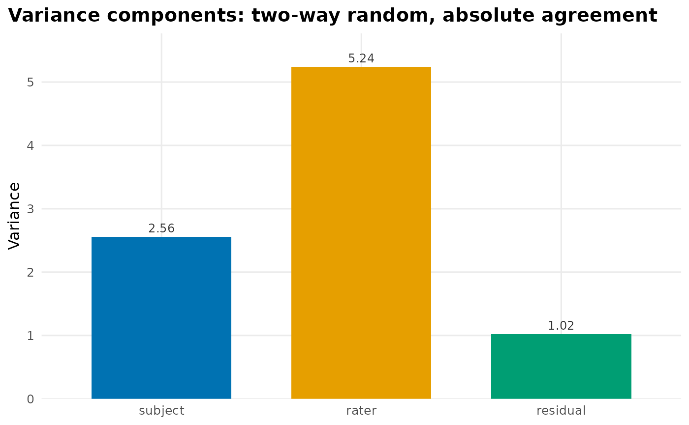

D-studies and within-cell replicates
Source:vignettes/d-studies-and-replicates.Rmd
d-studies-and-replicates.RmdTwo things you can do once you have a fitted icc():
project its reliability to a different number of raters (a decision
study), and — when each cell holds more than one rating —
separate the subject-by-rater interaction from pure error
(within-cell replicates). This article also shows the
autoplot() methods that visualize a fit. (Unfamiliar terms
are defined in the Glossary.)
How many raters do I need? A D-study
ICC(*,1) is the reliability of a single rater
and ICC(*,k) the reliability of the mean of the
k raters you actually used. A decision (D-)
study asks a forward-looking question: how reliable would
the mean of some other number of raters m be? In
generalizability theory the absolute-agreement ICC is the dependability
coefficient, and projecting it to m raters is just a
change of the averaging divisor,
so d_study() reuses the fit you already have — no
refitting.
fit <- icc(ratings, score, subject, rater, seed = 1)
proj <- d_study(fit, m = 1:8)
proj
#> # D-study projection: two-way random, absolute agreement
#> Observed raters: 4 | CI: 95% montecarlo (10000 draws)
#> m estimate 95% CI
#> 1 0.290 [0.050, 0.706]
#> 2 0.449 [0.096, 0.828]
#> 3 0.550 [0.137, 0.878]
#> 4 0.620 [0.175, 0.906]
#> 5 0.671 [0.210, 0.923]
#> 6 0.710 [0.241, 0.935]
#> 7 0.741 [0.271, 0.944]
#> 8 0.765 [0.298, 0.950]Reliability climbs with more raters but with diminishing returns, and
the projection is anchored to what you observed: at m = 4
(the number of raters in ratings) Φ(m) is
exactly the ICC(A,k) you would get from icc()
directly. For a one-off value you can also ask icc() for it
inline with a numeric unit,
e.g. unit = c("single", "average", 6).
Read as a curve, this is the classic “how many raters?” picture —
plot it with autoplot() (which needs
ggplot2):

Projection is extrapolation. The rater variance
is estimated from only as many raters as you observed, so projecting far
beyond that design leans hard on that estimate. The Monte-Carlo interval
widens honestly to reflect this rather than pretending to a precision it
lacks — and projecting absolute agreement is refused for fixed raters,
where there is no wider rater universe to generalize to (use
raters = "random"). The D-study
also works on a multilevel fit, projecting the rater count at each
level.
Within-cell replicates: interaction vs. pure error
So far every subject-by-rater cell holds a single rating. When each
rater rates each subject more than once —
within-cell replicates — you can separate two things that a
single rating confounds: the subject-by-rater
interaction (does a rater systematically score a particular
subject high or low — a stable disagreement?) and pure
error (how much a rater’s repeat ratings of the same subject
wobble). icc() detects the replicates and fits the
interaction model automatically:
set.seed(2025)
ns <- 20
nr <- 4
no <- 3
grid <- expand.grid(subject = seq_len(ns), rater = seq_len(nr), occ = seq_len(no))
subj <- rnorm(ns, sd = 1.1)[grid$subject]
rater <- rnorm(nr, sd = 0.8)[grid$rater]
sr <- rnorm(ns * nr, sd = 0.6)[(grid$rater - 1) * ns + grid$subject]
reps <- data.frame(
subject = factor(grid$subject),
rater = factor(grid$rater),
score = 10 + subj + rater + sr + rnorm(nrow(grid), sd = 0.7)
)
icc(reps, score, subject, rater, occasions = c("single", "average"))
#> ── Intraclass correlation: two-way random, absolute agreement ──────────────────
#> Subjects: 20 | Raters: 4 (random) | 80 cells x 3 replicates (complete)
#> Engine: glmmTMB (REML) | CI: 95% montecarlo (10000 draws)
#>
#> index occasions estimate 95% CI
#> ICC(A,1) 1 0.263 [0.083, 0.489]
#> ICC(A,1) 3 0.300 [0.088, 0.562]
#> ICC(A,k) 1 0.588 [0.265, 0.793]
#> ICC(A,k) 3 0.631 [0.279, 0.837]
#>
#> Variance components: subject 0.631, rater 0.901, subject:rater 0.428, residual 0.443
#> Shrout & Fleiss equivalent: ICC(A,1) = ICC(2,1), ICC(A,k) = ICC(2,k)The variance-components line now shows subject:rater
(the interaction) and residual (pure error) as separate
terms. The single-occasion rows
(occasions = 1) are the ordinary ICCs — a single rating’s
error still includes the interaction — but they are now fit correctly
rather than folding the interaction into the residual. The
occasion-averaged rows (occasions = 3
here) give the reliability of a rater’s mean of three ratings:
averaging cuts pure error (but not the interaction), so those
coefficients are higher.
Within-cell replicates extend beyond this balanced two-way random example: fixed raters (balanced), multilevel designs (crossed Design 1 and nested Design 2, balanced), and ragged replicates at a single occasion are all supported. What remains open is the occasion-averaged coefficient on ragged replicates — with unequal per-cell counts there is no single effective-occasion divisor with a validated oracle — along with the compound fixed-by-ragged and multilevel-by-ragged corners.
How many occasions do I need? A D-study on the occasion facet
Just as d_study(m = ...) projects the number of
raters, d_study(n_o = ...) projects the number of
occasions off a replicate fit — holding the raters fixed and
asking “how reliable would each rater’s mean of n_o ratings
be?”. Supply exactly one axis per call (m
or n_o).
fit_rep <- icc(reps, score, subject, rater, occasions = "average")
d_study(fit_rep, n_o = 1:6)
#> # D-study projection: two-way random, absolute agreement
#> Held raters: 4 (average) | projecting occasions | CI: 95% montecarlo (10000 draws)
#> n_o m estimate 95% CI
#> 1 4 0.588 [0.265, 0.791]
#> 2 4 0.620 [0.277, 0.824]
#> 3 4 0.631 [0.280, 0.835]
#> 4 4 0.637 [0.282, 0.841]
#> 5 4 0.641 [0.283, 0.845]
#> 6 4 0.643 [0.284, 0.847]Notice the curve flattens. Averaging more occasions
only cancels pure error (residual); it never
touches the rater or subject:rater variance. So the
occasion curve climbs to a ceiling below 1 — the
reliability you would reach with perfectly repeatable ratings but the
same raters — rather than approaching 1 the way a rater projection does.
Read it as “how much does re-rating help?”, which saturates.
Because occasions are a random facet however the
raters are treated, the occasion projection is defined even where a
rater projection is not: fixed-rater absolute agreement projects
on the occasion axis (it is only the rater axis that
is undefined for fixed absolute agreement, having no “freshly sampled
rater” to add). On a multilevel replicate fit the
subject-level curve rises with n_o while the cluster-level
curve is flat — the cluster-level error set has no
pure-error term, so occasions cannot change it (d_study()
says so with a note).
Visualizing a fit
Every icc() fit carries an autoplot()
method (with a plot() wrapper), so you can see the
coefficients and the variance components behind them without building a
plot by hand. Both read straight off the fitted object, so the picture
can never disagree with the printed table. They need
ggplot2, an optional dependency.
The default, what = "coefficients", is a forest
plot — each ICC index as a point estimate with its Monte-Carlo
interval. Reusing the two-way ratings fit from the D-study
section above:

what = "components" shows the other half of the story —
the estimated variance components the ratio is built
from. It makes plain why absolute agreement is so much lower
than the averaged coefficient on ratings: the
rater component is large, and only absolute agreement
counts between-rater differences as error:
autoplot(fit, what = "components")
For a multilevel fit the forest plot facets by level — see Multilevel designs for that example.